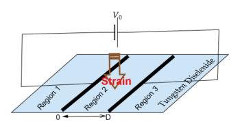

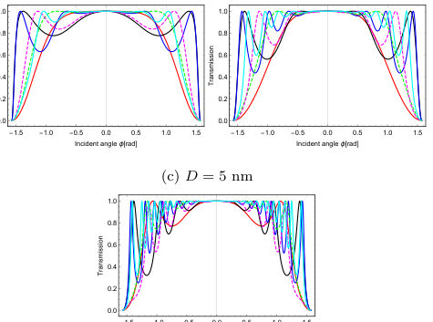
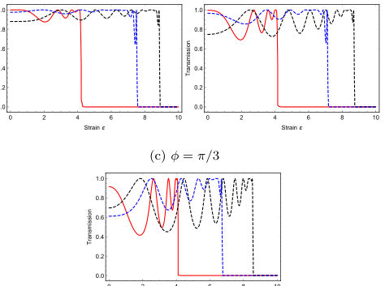
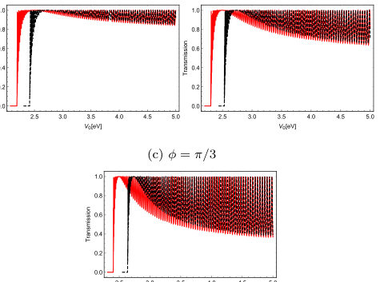
← Index · ← Previous · Next →
Authors: Rachid El Aitouni, Hasna Chnafa, Clarence Cortes, David Laroze, Ahmed Jellal
Type: theory · Category: other · PDF: https://arxiv.org/pdf/2605.24851v1
Analysis basis: full PDF text, analyzed in chunks




Summary. This theoretical study demonstrates that mechanical strain can be used as a 'control knob' to manipulate the spin and valley degrees of freedom in WSe2. By combining strain with electrostatic engineering, researchers can create highly efficient, reconfigurable filters for quantum transport. This provides a promising pathway for designing next-generation valleytronic and spintronic devices.
Why it may be interesting. not directly relevant
Main problem. Investigating how uniaxial strain and electrostatic potentials can be used to tune quantum transport, specifically spin and valley polarizations, in monolayer WSe2.
Main result. Strain acts as a powerful tuning parameter that modifies electronic dispersion and induces oscillations in conductance and transmission, enabling highly controllable spin and valley filtering.
Method. Analytical solution of the Dirac equation using a transfer matrix approach and the Landauer-Buttiker formalism to calculate conductance and polarization.
Model / system. A monolayer of tungsten diselenide (WSe2) featuring a rectangular electrostatic potential barrier and subject to uniaxial strain, modeled via a low-energy Dirac framework with spin-orbit coupling and a strain-induced gauge field.
Key observables. Transmission probability, conductance, spin polarization, and valley polarization.
Important parameters / regimes. Strain (u_xx), barrier height (V0), barrier width (D), incident energy (E), and incident angle (phi).
Assumptions / limitations. Assumes a low-energy Dirac-like band structure, ballistic transport, and uniaxial strain along the transport direction with uniform deformation.
Figures summary. Fig 1: Schematic of the strained WSe2 system; Fig 2: Transmission probability vs. incident angle; Fig 3: Spin-up transmission vs. strain; Fig 4: Spin-up/down transmission vs. barrier height; Fig 5: Conductance vs. strain; Fig 6: Polarization vs. barrier width; Fig 7: Spin and valley polarization vs. strain.
Paper structure. Introduction of the physical system and problem, description of the Dirac Hamiltonian and strain-induced gauge field, derivation of transmission/reflection coefficients via boundary conditions, numerical results for transport observables, and discussion of applications in spintronics/valleytronics.
We present a comprehensive theoretical study of strain-engineered quantum transport in monolayer tungsten diselenide (WSe$_2$) in the presence of an electrostatic scalar potential. By incorporating strain effects within a low-energy Dirac framework, we analyze their impact on spin- and valley-resolved transmission, conductance, and polarization. The applied potential barrier partitions the system into three distinct regions, allowing for an analytical derivation of the wave functions in each domain. Enforcing continuity conditions at the interfaces yields exact expressions for the transmission and reflection amplitudes. The transmission probability is evaluated from the corresponding current densities, while the conductance is obtained using the Landauer-Büttiker formalism, enabling a quantitative determination of spin and valley polarizations. Our numerical analysis reveals that strain acts as a powerful tuning parameter that reshapes the electronic dispersion and strongly modifies transport characteristics. In particular, the transmission and conductance exhibit pronounced oscillatory behavior driven by quantum interference and resonant tunneling mechanisms. More importantly, both spin and valley polarizations display substantial and highly controllable variations as functions of strain, barrier height, and incident energy. These results demonstrate that strain and electrostatic engineering provide an efficient and versatile platform for manipulating spin-valley degrees of freedom in WSe$_2$. The ability to tailor polarization and interference effects suggests promising opportunities for the design of next-generation spintronic, valleytronic, and optoelectronic devices based on two-dimensional transition-metal dichalcogenides.
Papers from cond-mat.mtrl-sci, mes-hall, other, soft, supr-con. These archives are de-prioritized — they appear at the end regardless of relevance score.
Authors: Xin-Xin Yang, Shuai Zhang, Kun Ding, Xiaopeng Li
Type: theory · Category: strongly correlated electrons · PDF: https://arxiv.org/pdf/2605.24439v1
Analysis basis: full PDF text, analyzed in chunks
Topic relevance: 🔥 correlated cavity matter 4/5 · non-equilibrium dynamics 3/5 · Tavis-Cummings & cavity-many-emitter 2/5 · driven-dissipative phase transition 2/5
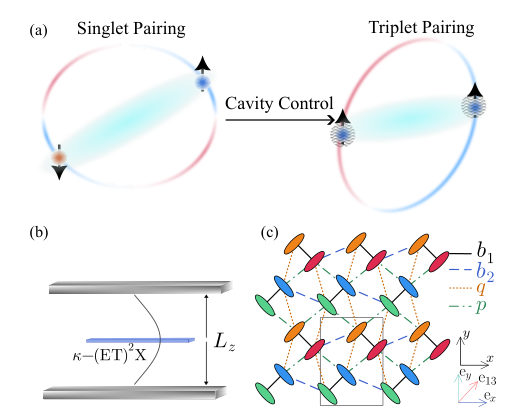
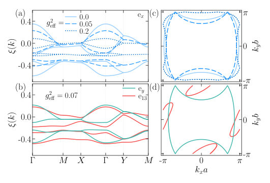
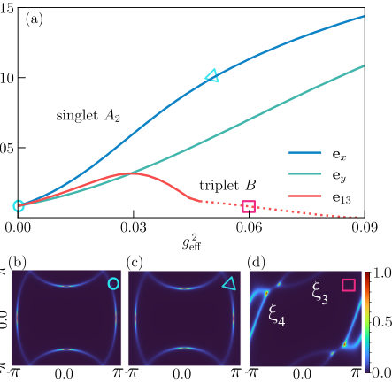
Summary. This paper shows that the vacuum fluctuations of a cavity can be used to engineer new superconducting phases in organic materials. By anisotropically renormalizing the electronic bands, the cavity can trigger a transition from singlet to triplet pairing. This establishes cavity vacuum engineering as a tool for generating unconventional and potentially topological superconducting states.
Why it may be interesting. It demonstrates a novel way to use vacuum-mediated light-matter interactions to control many-body phase transitions and manipulate the symmetry of superconducting order parameters.
Main problem. Investigating whether cavity vacuum fluctuations can drive a symmetry transition from singlet to triplet superconductivity by reshaping the electronic band structure and Fermi surface.
Main result. Above a critical light-matter coupling, the cavity vacuum fluctuations anisotropically renormalize hopping amplitudes, causing the leading superconducting instability to switch from a singlet d-wave to a triplet p-wave state.
Method. The authors use a quantum-Floquet expansion in the high-frequency regime to derive an effective Hamiltonian, combined with linearized BCS theory and symmetry analysis of the C2v group.
Model / system. A tight-binding extended Hubbard model representing the quasi-2D organic superconductor kappa-(ET)2X, coupled to a quantized electromagnetic field in a dark cavity.
Key observables. Superconducting transition temperature (Tc), gap structure, Fermi surface contours, and the zero-energy spectral function.
Important parameters / regimes. Effective light-matter coupling (geff), cavity polarization directions (ex, ey, e13), and the cavity compression factor (C).
Assumptions / limitations. The study assumes a high-frequency regime where the Hamiltonian is projected onto the zero-photon sector and neglects cavity-induced corrections to the interaction vertex.
Figures summary. Figure 1 shows a schematic of the singlet-to-triplet pairing switch, the crystal structure of kappa-(ET)2X in a cavity, and the underlying four-site lattice structure.
Paper structure. The paper introduces the concept of cavity engineering, defines the effective Hamiltonian via Floquet projection, performs symmetry analysis of pairing channels, demonstrates the mechanism of band renormalization, and concludes with the emergence of the triplet phase.
Engineering quantum materials with cavity fields has emerged as a powerful route to manipulate phases of quantum matter in solids. Here we demonstrate that cavity vacuum fluctuations alone can drive the emergence of triplet superconductivity in an otherwise singlet superconductor. The vacuum field renormalizes the electronic band structure in a polarization dependent manner, reshaping the Fermi surface and altering the competition among symmetry allowed pairing channels. As a result, multiple superconducting phases arise from the cavity vacuum fluctuations. Above a critical light matter coupling, the leading instability switches from singlet to triplet pairing, yielding a superconducting state absent in the bare material. This vacuum induced symmetry transition produces distinct modifications of the gap structure and low energy quasiparticle spectrum. Our results establish cavity vacuum engineering as a mechanism for generating unconventional superconducting phases and stabilizing triplet states of potential relevance for topological superconductivity.
Authors: Yuefei Liu, Tien-Tien Yeh, Alexander V. Balatsky
Type: theory · Category: other · PDF: https://arxiv.org/pdf/2605.24720v1
Analysis basis: full PDF text, analyzed in chunks
Topic relevance: 🔥 spintronics-quantum-optics interface 4/5 · non-equilibrium dynamics 3/5 · exotic spin models in light-matter 2/5 · interference shaping light 2/5
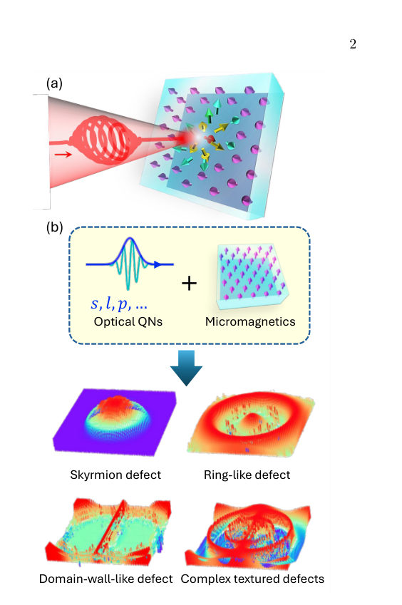
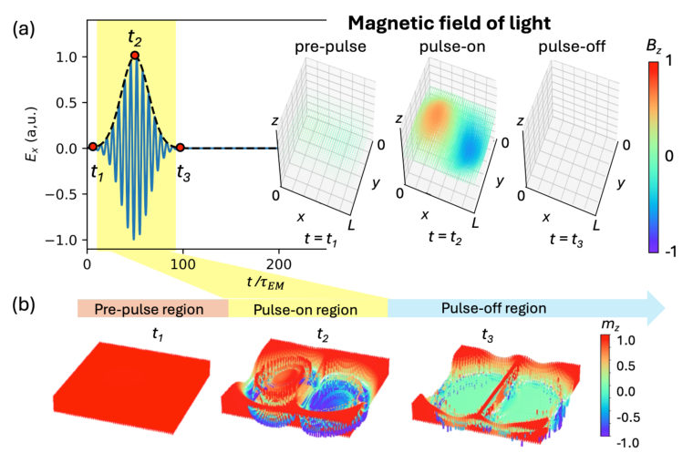
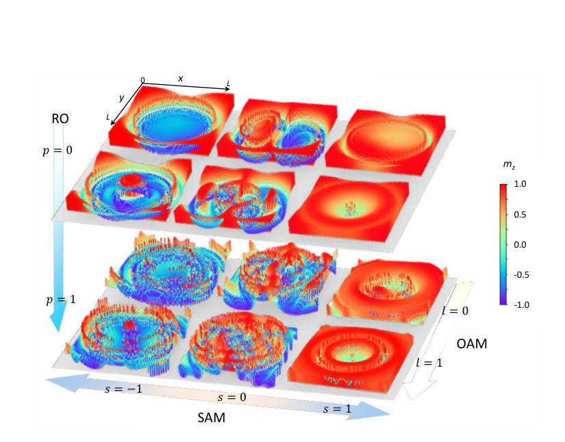
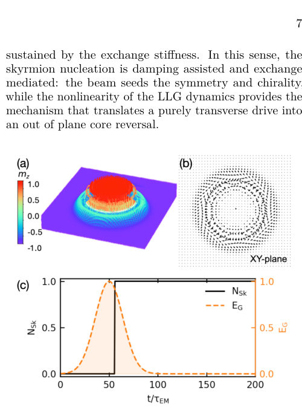
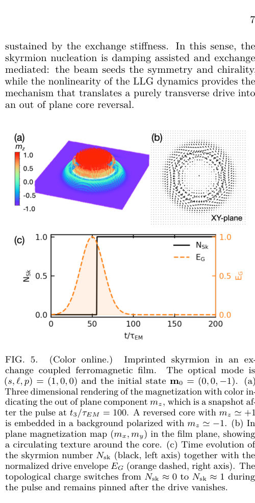
Summary. This paper proposes a 'quantum printing' technique where the spatial structure of Laguerre-Gaussian light pulses is used to programmatically create topological magnetic textures in ferromagnets. By tuning the spin and orbital angular momentum of the light, researchers can deterministically imprint complex patterns like skyrmions without needing specific material properties. This approach offers a versatile, ultrafast, and material-agnostic method for controlling magnetic topology.
Why it may be interesting. It demonstrates a unique way to use structured light (quantum optics) to control and program the topology of a many-body magnetic system, bridging the gap between optical angular momentum and emergent magnetic textures.
Main problem. Developing a material-agnostic, non-contact, and ultrafast method to create and control complex, spatially programmable topological magnetic textures like skyrmions without relying on intrinsic material properties like Dzyaloshinskii-Moriya interactions.
Main result. The authors demonstrate that Laguerre-Gaussian (LG) pulses can 'print' various magnetic textures (skyrmions, domain walls, multi-ring structures) by using optical quantum numbers (SAM, OAM, and radial order) to act as a symmetry-selected torque during an optical quench.
Method. Micromagnetic simulations using the Landau-Lifshitz-Gilbert (LLG) equation with a fourth-order Runge-Kutta integration scheme on a uniform Cartesian mesh.
Model / system. A collinear ferromagnetic thin film modeled with a Heisenberg spin Hamiltonian featuring only intrinsic isotropic exchange coupling and an external time-dependent magnetic field induced by THz Laguerre-Gaussian pulses.
Key observables. Magnetization field (m_z, m_x, m_y), topological charge density, skyrmion number (Q), and spin angular momentum/orbital angular momentum transfer.
Important parameters / regimes. Optical quantum numbers (s, l, p), exchange coupling (J = 5 meV), Gilbert damping (alpha = 0.1), and THz pulse electric field strength (E0 = 1.5e10 V/m).
Assumptions / limitations. The model assumes a simplified system with only isotropic exchange, deliberately omitting Dzyaloshinskii-Moriya interactions, anisotropy, and dipolar fields to prove the fundamental printing principle.
Figures summary. Figure 1 shows a schematic of light-driven spin dynamics; Figure 2 illustrates the temporal evolution of the optical pulse and the resulting spin response; Figure 3 displays snapshots of magnetization (m_z) for different beam configurations; Figure 7 shows complex multi-ring spin textures and in-plane magnetization maps.
Paper structure. The paper introduces the concept of quantum printing, describes the physical mechanism of optical quenching and angular momentum transfer, presents micromagnetic results for various LG mode indices, and discusses the hierarchy of resulting magnetic textures and potential experimental implementations.
Structured light has become a practical tool for controlling matter by applying tailored, space- and time-dependent electromagnetic fields. We show that Laguerre-Gaussian pulses imprint non-collinear magnetic textures via the spatial structure of optical magnetic field. Our route offers a direct spatial selectivity determined by the optical features without relying on material anisotropic interactions. The proposed printing approach does not require interfacial anisotropy or bulk chirality, current-driven torques, or thermal quenching. We use micromagnetic simulations to demonstrate the potential to create topological charge density emerging during the pulse and reveal control through the optical topological properties and polarization. These results suggest structured-light quantum printing as a viable approach for magnonics and motivate studies toward reconfigurable topological textures enabled by ultrafast THz optics and non-thermal control.
Authors: Harikrishnan Sundaresan, Prasad Muragesh, Madhu Thalakulam
Type: experiment · Category: quantum information and computing · PDF: https://arxiv.org/pdf/2605.25112v1
Analysis basis: full PDF text, analyzed in chunks
Topic relevance: 🔥 QC/QI experiment 4/5 · quantum optics experiment 3/5
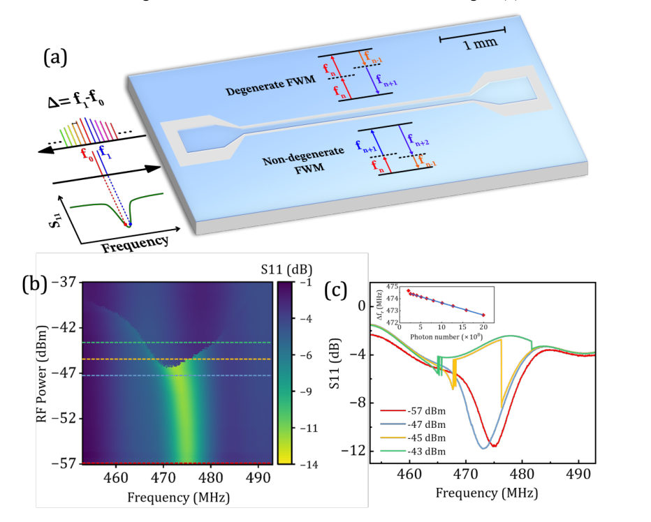
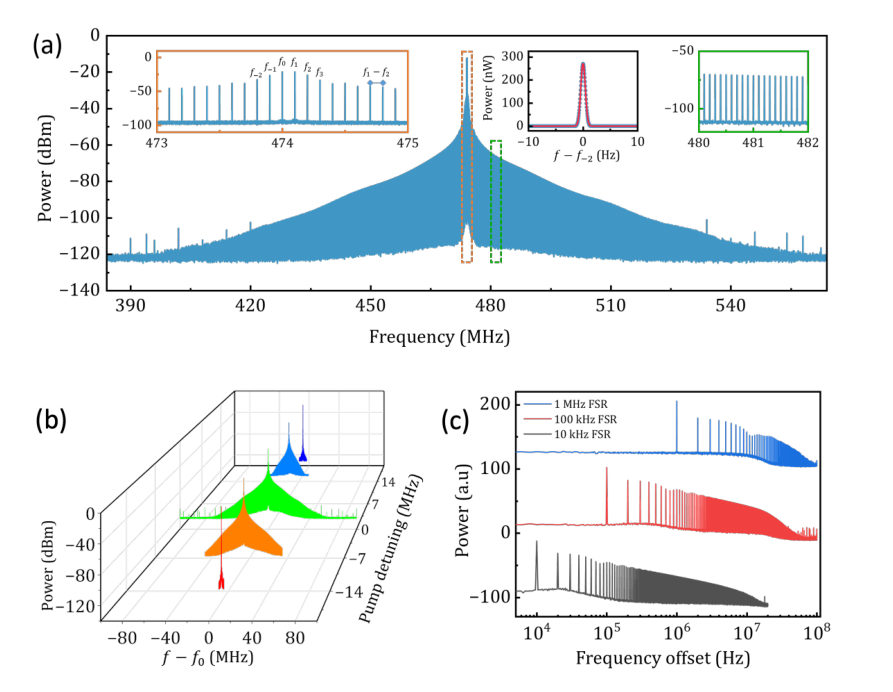
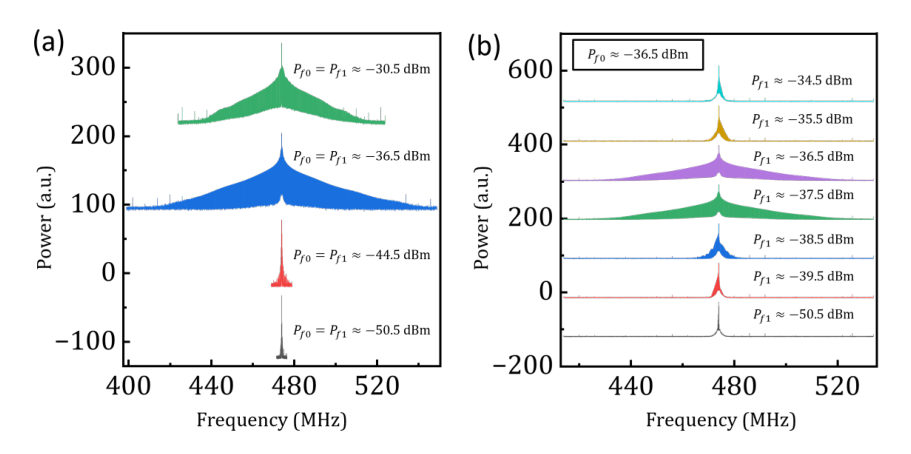
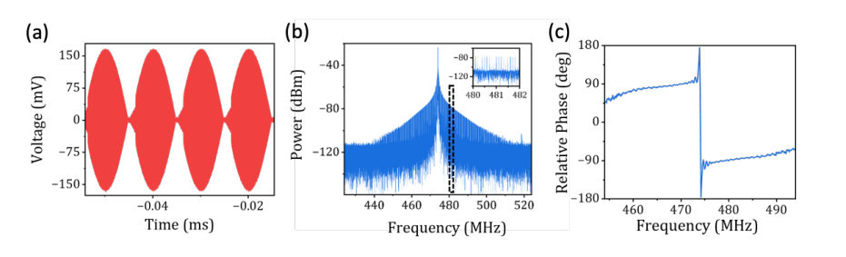
Summary. This paper demonstrates a new method for generating broadband, phase-coherent microwave frequency combs using the natural nonlinearity of Strontium Titanate substrates. By using two microwave pump tones, the researchers created a comb with over 1000 lines that is highly tunable and stable. This technology could significantly reduce the complexity of control electronics for large-scale superconducting quantum computers.
Why it may be interesting. This work is highly relevant to quantum optics and quantum control as it presents a new material platform for generating large-scale, phase-locked microwave photon states, potentially solving the 'cabling bottleneck' in quantum computing.
Main problem. The need for scalable, on-chip, and tunable cryogenic microwave frequency combs to replace bulky electronics for tasks like multiplexed control and readout in large-scale quantum processors.
Main result. Demonstrated the generation of a phase-coherent, broadband microwave frequency comb (>1000 lines) using the intrinsic Kerr nonlinearity of a Strontium Titanate (STO) substrate via cascaded four-wave mixing.
Method. The researchers used dual-tone microwave pumping on a superconducting aluminum coplanar waveguide resonator at millikelvin temperatures and analyzed the nonlinear response via microwave reflection (S11) and time-domain pulse analysis.
Model / system. A superconducting aluminum coplanar waveguide (CPW) resonator fabricated on a Strontium Titanate (STO) quantum paraelectric substrate, modeled as a nonlinear oscillator with a Kerr-type Hamiltonian.
Key observables. Resonance frequency shifts, self-Kerr coefficient, frequency comb bandwidth, Free Spectral Range (FSR), spectral flatness, and long-term phase stability.
Important parameters / regimes. Operating temperature ~600 mK, Kerr coefficient of -10.20e-11 Hz per photon, comb bandwidth >150 MHz, and tunable FSR from 10 kHz to 1 MHz.
Assumptions / limitations. The resonator is assumed to be in an over-coupled regime, and the nonlinearity is primarily attributed to the third-order Kerr effect from soft transverse phonon modes in the STO.
Figures summary. Figure 1 shows the device schematic, the dual-tone pumping scheme, and the power-dependent resonance evolution; Figure 2 displays the broadband comb spectrum and its high spectral flatness; Figure 4 demonstrates the long-term phase stability of the comb lines.
Paper structure. The paper introduces the motivation for on-chip combs, describes the STO-based experimental platform, quantifies the intrinsic Kerr nonlinearity, demonstrates the generation of the broadband frequency comb, and concludes with stability and tunability analysis.
Here, we demonstrate an on-chip cryogenic microwave frequency-comb on a planar superconducting resonator fabricated on Strontium titanate(STO), a quantum paraelectric material. The material's Kerr-type nonlinearity arising from the quantum paraelectric phase, an underexplored state, enables pronounced resonance shifts, Duffing-like bifurcations and comb generation via cascaded foure-wave mixing. Our results establish STO resonators as a low power, cryogenically compatible platforms for nonlinear microwave photonics, with applications in scalable quantum control and on-chip frequency synthesis.
Authors: Vassilios M Rothos
Type: theory · Category: statistical mechanics · PDF: https://arxiv.org/pdf/2605.24745v1
Analysis basis: full PDF text, analyzed in chunks
Topic relevance: non-equilibrium dynamics 3/5 · Frenkel-Kontorova 2/5 · driven-dissipative phase transition 2/5 · methods for driven-dissipative 2/5
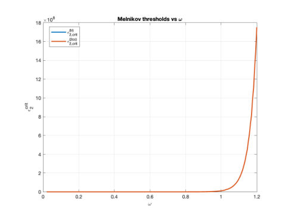
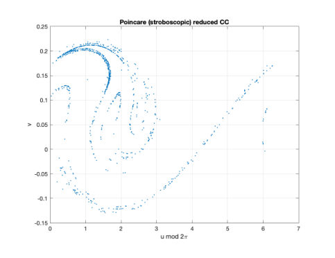
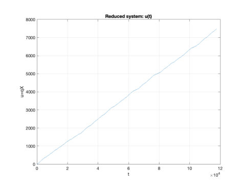
Summary. This paper analytically derives the conditions for the onset of chaos in the motion of phi^4 kinks under external driving and spatial modulation. It demonstrates that the kink's internal shape mode can significantly lower the threshold for chaos through a resonant back-reaction. The analytical predictions from the reduced-order models are shown to be consistent with the full field-theory dynamics.
Why it may be interesting. The study of how internal degrees of freedom (shape modes) can resonantly enhance chaos in a driven system is highly relevant to the study of non-equilibrium dynamics and driven-dissipative many-body systems.
Main problem. Investigating the emergence of chaotic dynamics and the mechanism of separatrix splitting in the reduced-order models of driven and spatially modulated phi^4 kinks.
Main result. The study provides an explicit analytical characterization of chaos via Melnikov theory, identifying that internal-mode excitation acts as a resonant amplifier that lowers the chaos threshold.
Method. The author uses Melnikov theory applied to translation-only and two-collective-coordinate (2-CC) reductions, supplemented by numerical simulations including Lyapunov exponents and Poincaré sections.
Model / system. A driven-damped phi^4 field theory on a real line featuring spatial modulation (pinning), traveling-wave forcing, and linear dissipation.
Key observables. Separatrix splitting amplitudes, Lyapunov exponents, Poincaré sections, and the back-reaction coefficient alpha.
Important parameters / regimes. Dissipation (eta), external bias (Gamma), modulation amplitudes (epsilon_1, epsilon_2), and the relationship between driving frequency (omega) and internal-mode frequency.
Assumptions / limitations. Smallness of modulation and dissipation parameters, and the assumption of sufficient spatial localization of the kink to ensure well-defined projection integrals.
Figures summary. Figure 1 compares critical forcing thresholds and splitting amplitudes for different modes; Figure 2 and 3 show Poincaré sections, chaotic layers, and the time evolution of the kink center.
Paper structure. The paper progresses from defining the modulated phi^4 model to deriving collective-coordinate reductions, applying Melnikov theory to find chaos criteria, and validating these via numerical simulations of both reduced and full PDE dynamics.
We investigate the emergence of chaotic dynamics in collective-coordinate reductions of a driven and spatially modulated $φ^4$ field describing the motion of topological kinks. Focusing on finite-dimensional effective models, we consider both translation-only and constraint-consistent two--collective--coordinate reductions in the presence of spatial pinning, dissipation, and traveling-wave forcing. Using Melnikov theory, we obtain an explicit analytical characterization of separatrix splitting and derive closed-form criteria for the onset of chaotic dynamics in the reduced phase space. In the two--collective--coordinate framework the Melnikov analysis is formulated in an extended phase space, allowing the distinct roles of translational motion and internal-mode excitation to be identified. Numerical simulations of the reduced systems, including stroboscopic Poincaré sections and Lyapunov exponent computations, confirm the analytical predictions and reveal chaotic layers organized around the unperturbed separatrix.
Authors: David A. Fehr, Corey J. Cochrane, Stephen R. McMillan, Nicholas J. Harmon, Patrick M. Lenahan, Michael E. Flatté
Type: theory · Category: quantum information and computing · PDF: https://arxiv.org/pdf/2605.26071v1
Analysis basis: full PDF text, analyzed in chunks
Topic relevance: spintronics-quantum-optics interface 3/5 · methods for driven-dissipative 2/5 · non-equilibrium dynamics 2/5 · quantum measurements 2/5
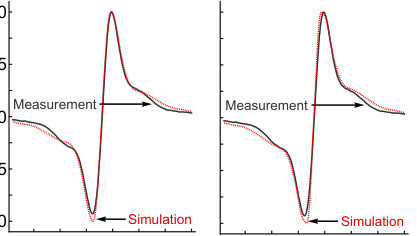
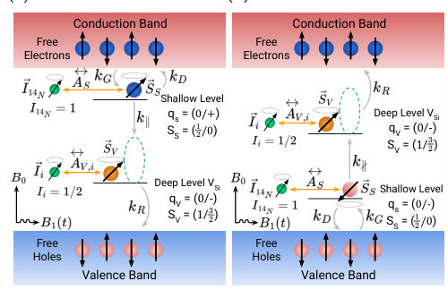

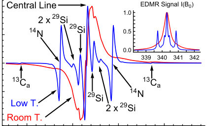
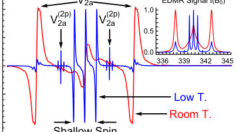
Summary. This paper provides a quantitative theoretical framework for simulating the electrically detected magnetic resonance of silicon vacancy spin pairs in silicon carbide. It identifies the role of a shallow-level nitrogen-related complex in the observed EDMR spectra and predicts new methods for enhanced magnetic field sensing using double-quantum transitions.
Why it may be interesting. The use of Lindblad master equations to model spin-dependent recombination and the prediction of double-quantum transitions for enhanced sensing are highly relevant to researchers working on open quantum systems and quantum sensing.
Main problem. Developing a quantitative theory to simulate Electrically Detected Magnetic Resonance (EDMR) of silicon vacancy-related spin pairs in silicon carbide to optimize power electronics and magnetometer technology.
Main result. The theory successfully describes room-temperature EDMR measurements and identifies that spectral features arise from the hyperfine splitting of a shallow-level spin (an incomplete K-center) rather than the vacancy itself.
Method. The authors use steady-state Lindblad master equations to model the dynamics of different charge states and the occupancy of the shallow level, incorporating a weighted sum over the nuclear spin bath.
Model / system. The system consists of silicon vacancy-related spin pairs (V1a and V2a) in 4H-SiC interacting with a nearby shallow level defect (the incomplete K-center) within 10 nm. The Hamiltonian includes Zeeman interaction, zero-field splitting, and hyperfine interactions with 29Si, 13C, and 14N.
Key observables. EDMR spectrum (change in spin-dependent recombination current dI/dB0) and integrated EDMR spectrum I(B0).
Important parameters / regimes. Spin coherence times (T1, T2), electrical transport rates, g-factors, zero-field splitting (D), and hyperfine coupling constants (A).
Assumptions / limitations. The model assumes a three-manifold model for charge state dynamics and uses the rotating wave approximation in the rotating frame.
Figures summary. Figure 1 shows EDMR diagrams for shallow donor and acceptor models illustrating recombination processes; Figure 2 compares simulated and experimental EDMR spectra for V1a vacancies.
Paper structure. The paper introduces the problem of SiC defect recombination, presents a Lindblad-based theoretical framework, applies the model to room-temperature V1a data, predicts low-temperature hyperfine resolution, and discusses potential for V2a double-quantum transitions.
We present a quantitative theory for simulating the electrically detected magnetic resonance (EDMR) of silicon vacancy-related spin pairs in silicon carbide using steady-state Lindblad master equations. In our theory, we consider V1a and V2a deep level silicon vacancies near the (0/-) charge state transition level in proximity to a previously identified nitrogen-related complex, the incomplete K-center, due to the hyperfine, spin structure, and Landé g factor of the shallow state. Our theory describes recent room temperature measurements attributed to V1a silicon vacancies, with reasonable extracted parameters for defect spin coherence times and electrical transport rates. At lower temperatures we predict that the shallow level hyperfine structure may be spectrally resolvable. Finally, we predict the EDMR spectrum of V2a silicon vacancy-related spin pairs and predict that two-photon, double quantum transitions of the silicon vacancy's negative charge state can be electrically read-out for enhanced magnetic field sensing.
Authors: F. Colangelo, Abhishek Kumar, H. Wang, F. Avitabile, C. Attanasio, I. Esmaeil Zadeh, C. Cirillo
Type: experiment · Category: quantum information and computing · PDF: https://arxiv.org/pdf/2605.25597v1
Analysis basis: full PDF text, analyzed in chunks
Topic relevance: QC/QI experiment 3/5 · quantum optics experiment 3/5 · quantum measurements 1/5
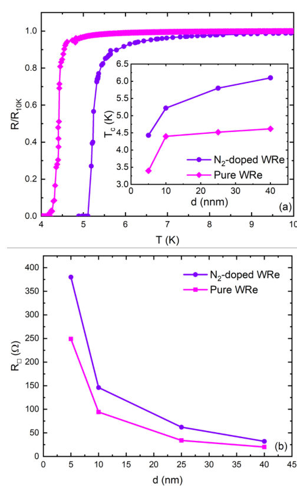
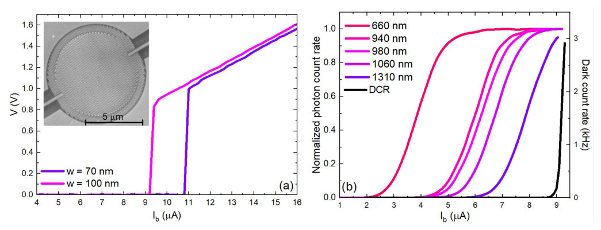
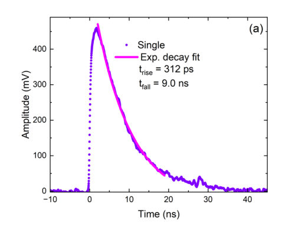
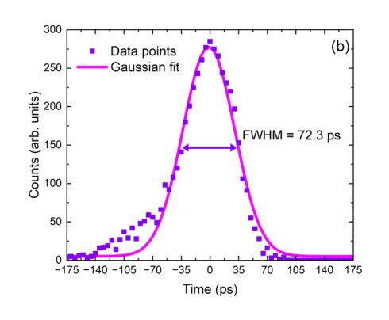
Summary. This work demonstrates the development of Nitrogen-doped WRe superconducting nanowire single-photon detectors. The new material platform provides high detection efficiency at telecom wavelengths and very low timing jitter. This advancement offers a versatile alternative to existing NbN and WSi-based detectors for quantum technologies.
Why it may be interesting. This paper is relevant to quantum optics and quantum networks as it presents a new material platform for high-performance single-photon detectors, which are essential components for quantum communication and photonic quantum computing.
Main problem. The need for new material platforms for Superconducting Nanowire Single-Photon Detectors (SNSPDs) that combine high detection efficiency, low timing jitter, and the ability to operate at elevated temperatures for quantum communication and sensing.
Main result. Nitrogen-doped W0.75Re0.25 SNSPDs achieve high internal detection efficiency (up to 100% at 1060 nm and 95% at 1310 nm) with a low timing jitter of 72.3 ps and sub-nanosecond rise times.
Method. The researchers used reactive DC magnetron sputtering to deposit ultrathin WRe films in an Ar/N2 atmosphere, followed by electron beam lithography and reactive ion etching to create 70 nm linewidth meander detectors.
Model / system. The experimental platform consists of ultrathin (10 nm) amorphous Nitrogen-doped W0.74Re0.25 superconducting thin-film meander detectors operated at cryogenic temperatures (2.5 K).
Key observables. Internal detection efficiency (IDE), timing jitter (FWHM), rise and decay times, critical current (Ic), critical current density (Jc), and electron-electron/electron-phonon interaction times.
Important parameters / regimes. Tc approx 5.22 K, linewidth 70 nm, pitch 140 nm, jitter 72.3 ps, and wavelength range 660-1310 nm.
Assumptions / limitations. The study notes potential performance limitations due to resistivity inhomogeneities from partial oxidation and early-stage fabrication processes.
Figures summary. Figure 3 shows single SNSPD pulse decay with an exponential fit; Figure 4 displays the timing jitter distribution with a Gaussian fit.
Paper structure. The paper introduces the material motivation, details the fabrication and sputtering process, presents superconducting and electrical characterization, reports photon detection performance and temporal dynamics, and concludes with an analysis of interaction times and optimization needs.
Nitrogen-doped Tungsten-Rhenium superconducting alloys were recently proposed as a promising material platform for superconducting nanowire single-photon detectors (SNSPDs), offering a favorable balance between high normal state resistivity and tunable superconducting properties. In this work, we report on the fabrication and characterization of SNSPDs based on ultrathin W0.75Re0.25 films deposited by reactive DC magnetron sputtering in a mixed Ar/N2 atmosphere. Meander detectors with 70 nm linewidth exhibit saturated internal detection efficiency up to 1310 nm at 2.5 K, with sub-nanosecond rise times, decay times of the order of a few nanoseconds, and timing jitter of 73.2 ps measured with room temperature amplifiers.
Authors: Laura Pinkney, Alastair M. Rucklidge, Cedric Beaume
Type: theory · Category: statistical mechanics · PDF: https://arxiv.org/pdf/2605.25849v1
Analysis basis: full PDF text, analyzed in chunks
Topic relevance: non-equilibrium dynamics 3/5 · driven-dissipative phase transition 2/5 · non-equilibrium universality 2/5
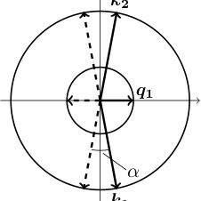
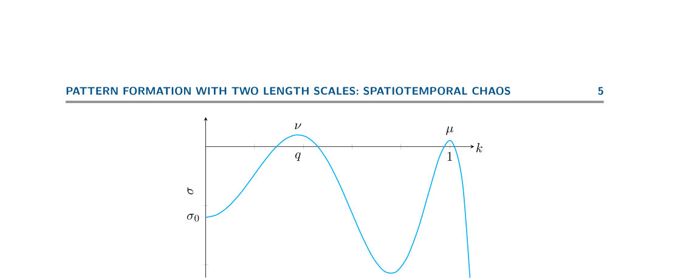
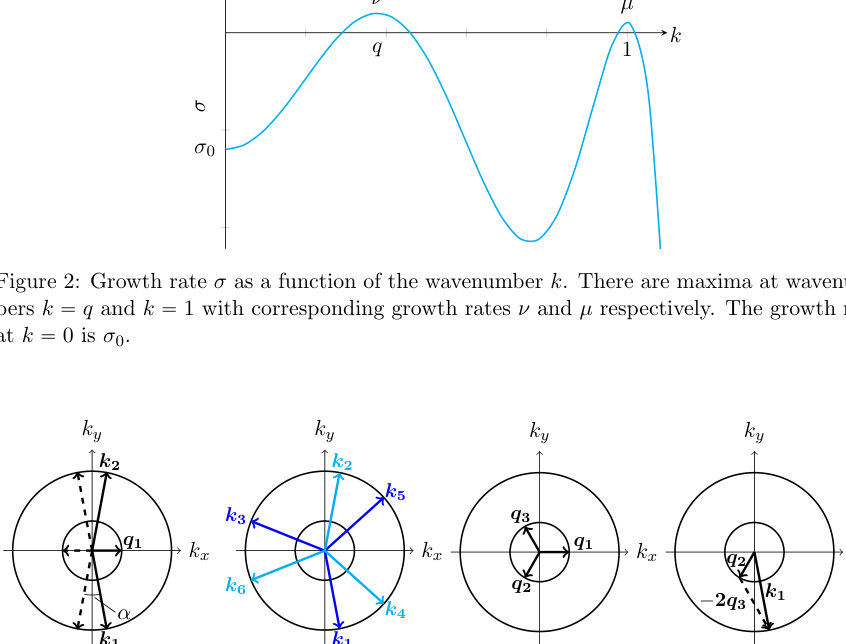
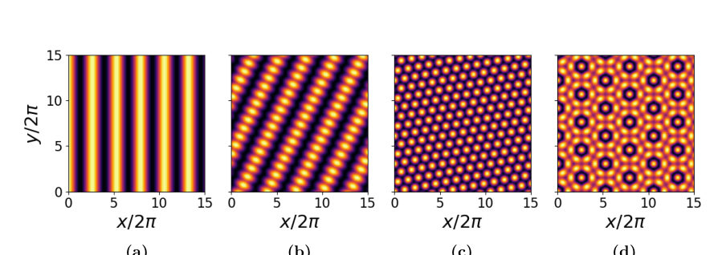
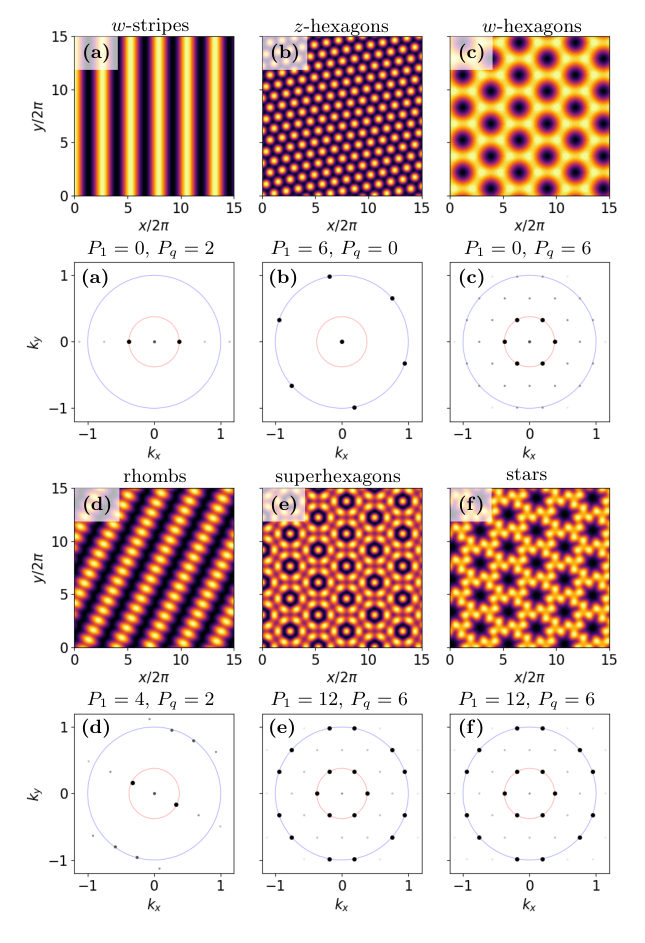
Summary. This paper explores how nonlinear interactions between two different length scales drive the transition from stable patterns to spatiotemporal chaos. By combining amplitude equation theory with direct PDE simulations, the authors show that chaos emerges from the competition between wave triads and the expansion of modes beyond the initial subspace. The work provides a new framework for classifying complex, time-dependent patterns in multi-scale systems.
Why it may be interesting. The study of how competing scales and nonlinear mode-coupling drive transitions to spatiotemporal chaos is highly relevant to understanding non-equilibrium dynamics and pattern formation in many-body systems and driven-dissipative quantum systems.
Main problem. Investigating the mechanisms by which nonlinear wave interactions between two distinct length scales lead to the emergence of spatiotemporal chaos (STC).
Main result. The study identifies that STC arises from the growth of modes outside a predefined subspace, driven by time-dependent competition between wave triads and, specifically for certain wavenumber ratios, four-wave interactions.
Method. The authors use weakly nonlinear theory to derive a system of eighteen-mode amplitude equations (ODEs) and compare their stability predictions with direct numerical simulations of a model partial differential equation (PDE).
Model / system. A model partial differential equation (PDE) featuring two critical wavenumbers (k=1 and k=q) and nonlinearities that break variational structure, relevant to Faraday wave experiments and reaction-diffusion systems.
Key observables. Fourier power spectrum (peak counting and fuzziness), time-derivative metrics (C1, C2, C3) for pattern classification, and growth rates.
Important parameters / regimes. Wavenumber ratio q (specifically q = 1/sqrt(7)), linear growth rates (mu, nu), and quadratic/cubic interaction coefficients.
Assumptions / limitations. The analysis assumes the dynamics can be captured by a truncated expansion of amplitude equations near the onset of instability.
Figures summary. Schematics of wavevector interactions, growth rate plots, Fourier spectra showing pattern types, and demonstrations of the pattern classification method using local Fourier analysis.
Paper structure. The paper introduces the problem of two-scale pattern formation, derives amplitude equations via weakly nonlinear theory, performs stability analysis of various equilibrium patterns, presents large-scale PDE simulations, and details a robust classification method for complex chaotic states.
Three-wave interactions (or resonant triads) are the lowest-order nonlinear interaction in pattern formation and arise between waves with different orientations when the sum of two wavevectors equals a third one. When a pattern has only one length scale, stripe patterns are possible but three-wave interactions are responsible for the prevalence of hexagons close to onset. In problems with two length scales, there is a much wider range of possible three-wave interactions, leading to more complex structures such as superhexagons, stars, quasipatterns and even spatiotemporal chaos (STC). We investigate the role that nonlinear wave interactions play in the formation of STC in a model partial differential equation (PDE) in the case that the length scale ratio is $\sqrt{7}$, relevant to superlattice patterns in the Faraday wave experiment. The simpler aspects of the dynamics can be represented by a system of ordinary differential equations (ODEs) derived from the PDE using weakly nonlinear theory. We analyze the equilibrium patterns in these ODEs and evaluate their stability, comparing the results with direct numerical simulations of the model PDE. The ODEs predict parameter regimes where there are no stable simple equilibria, which is where we typically find complex behavior in the PDE. We have conducted a careful study of the transition from simple patterns to patterns that include modes beyond the finite-dimensional subspace imposed in the reduction to the ODEs, to time-dependent competition between different triads, ending up with fully developed STC. For our choice of length scale ratio, we show that four-wave interactions also play an important role. Our analysis is relevant to any pattern-forming system with three-wave interactions involving two length scales, such as the Faraday wave experiment, coupled reaction-diffusion systems, and pattern formation in dryland vegetation.
Authors: Ryan Goh, Benjamin Krewson, Nilay Patel, Kiersten Ratcliff
Type: theory · Category: statistical mechanics · PDF: https://arxiv.org/pdf/2605.24209v1
Analysis basis: full PDF text, analyzed in chunks
Topic relevance: non-equilibrium dynamics 3/5 · driven-dissipative phase transition 2/5 · non-equilibrium universality 2/5
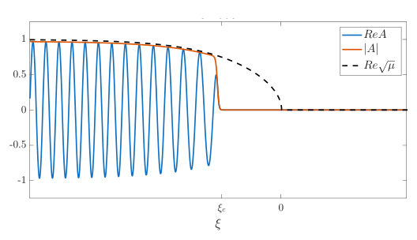
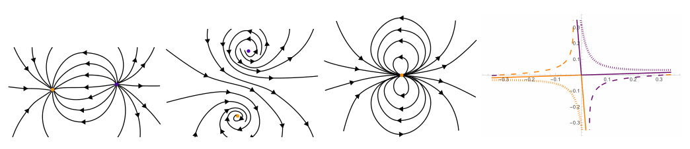
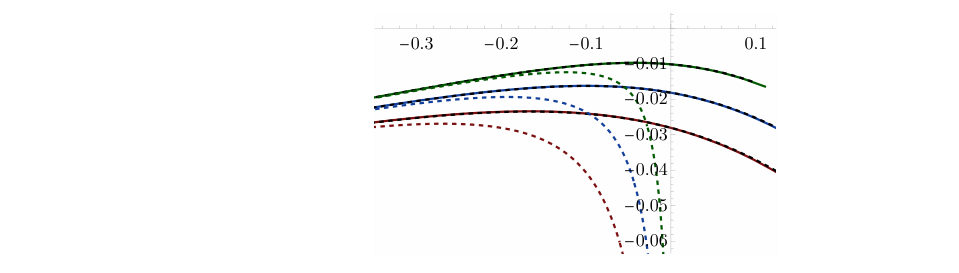
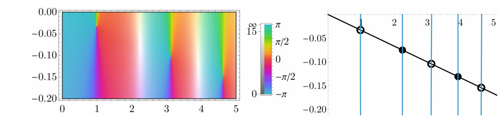
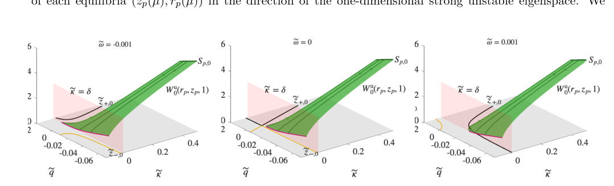
Summary. This paper analyzes how a moving, slowly-varying parameter ramp dictates the properties of pattern-forming fronts in the complex Ginzburg-Landau equation. It shows that the transition from convective to absolute instability governs the leading-order dynamics, while higher-order corrections follow a specific scaling law derived from an Airy-type inner solution. The findings are validated through both analytical asymptotic expansions and numerical simulations.
Why it may be interesting. The study of pattern formation driven by parameter ramps and the transition between convective and absolute instabilities is highly relevant to non-equilibrium dynamics and the stability of driven-dissipative systems.
Main problem. Investigating how a slowly-varying, propagating parameter ramp influences the formation, location, and wavenumber selection of pattern-forming fronts.
Main result. The transition between convective and absolute instability (AC instability) determines the leading-order front location and temporal frequency, with higher-order delays scaling as epsilon^(2/3) via an Airy quotient inner solution.
Method. Geometric Singular Perturbation Theory (GSPT), multiple scales analysis, and numerical continuation of heteroclinics and spectral stability.
Model / system. The supercritical complex Ginzburg-Landau equation (CGLE) with a spatially and temporally varying parameter ramp, and the Swift-Hohenberg equation for validation.
Key observables. Front interface location (delay), selected spatial wavenumber, temporal oscillation frequency, and spectral stability (eigenvalue accumulation).
Important parameters / regimes. Ramp speed (c), ramp slope (epsilon), dispersion/nonlinear coefficients (alpha, gamma), and the transition between convective and absolute instability.
Assumptions / limitations. The ramp is slowly-varying (epsilon << 1); the system is in the Benjamin-Feir stable regime (1 + alpha*gamma > 0).
Figures summary. Numerical simulations of pattern formation; plots of the complex Airy quotient function (zeros, poles, and contours); and comparisons of numerical wavenumber selection and front position against analytical AC instability predictions.
Paper structure. The paper introduces the ramped CGLE, develops a traveling wave reduction, applies GSPT and multiple scales analysis to derive an Airy-based inner solution, performs numerical continuation to validate the manifold structure, and concludes with spectral stability analysis and validation using the Swift-Hohenberg equation.
We study of the formation of pattern-forming fronts in the presence of a rigidly-propagating parameter ramp which is slowly-varying in space. In the context of the prototypical supercritical complex Ginzburg-Landau equation, we show that not only the leading order front interface, but also the selected spatial wave number is governed by the transition of the ramp between absolute and convective instability. The slow ramp then induces a further delay of the front interface and perturbation of the selected wave number, controlled by the slow passage near a complex fold of strong- and weak-stable eigenspaces. To analyze the behavior near this fold, we perform a multiple scales analysis to predict the higher-order front interface delay in terms of zeros and poles of a complex Airy quotient inner solution. We confirm these predictions with numerical continuation of heteroclinics in the associated traveling wave equation. We also numerically characterize their spectral stability, finding accumulation of eigenvalues consistent with previous results on slow absolute spectrum. We then show the leading-order absolute/convective instability heuristic accurately describes selected wave numbers in an analogous slowly-ramped Swift-Hohenberg equation.
Authors: Kyo Yoshida, Hideaki Miura, Yoshiyuki Tsuji
Type: theory · Category: quantum gases · PDF: https://arxiv.org/pdf/2605.25915v1
Analysis basis: full PDF text, analyzed in chunks
Topic relevance: non-equilibrium dynamics 3/5 · non-equilibrium universality 2/5
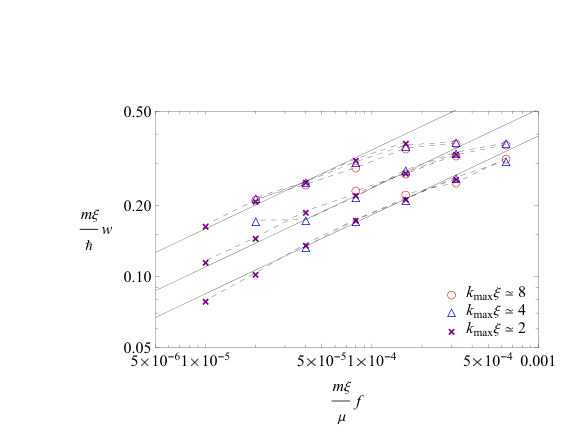
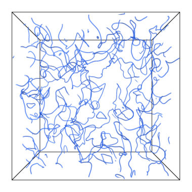
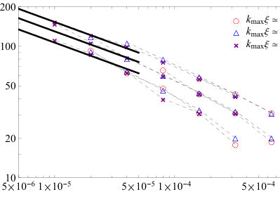
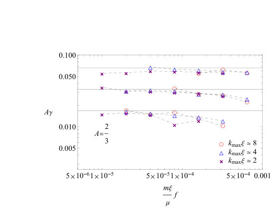
Summary. This study uses numerical simulations of the dissipative Gross-Pitaevskii equation to characterize turbulence in quantum fluids. It discovers a cubic scaling law between mutual friction and relative velocity and demonstrates that the vortex tangle is nearly isotropic. The results provide a bridge between phenomenological damping parameters and observable turbulent dynamics.
Why it may be interesting. It provides insights into non-equilibrium dynamics and dissipation in quantum fluids, which is relevant to understanding turbulence and energy dissipation in many-body systems and ultracold gases.
Main problem. Investigating the dynamics of thermal-counterflow turbulence in quantum fluids, specifically focusing on the relationship between mutual friction, relative velocity, and vortex-line density.
Main result. The mutual-friction acceleration exhibits a cubic scaling with the mean relative velocity (f proportional to w^3), with a scaling coefficient linked to the damping parameter gamma, and the vortex tangle is found to be nearly isotropic.
Method. Numerical simulations of the dissipative Gross-Pitaevskii equation (DGPE) using a Fourier transform method on a 1024^3 grid.
Model / system. A bulk region of thermal-counterflow turbulence modeled by the dissipative Gross-Pitaevskii equation (DGPE), representing a system where superfluid and normal-fluid components move in opposite directions.
Key observables. Mean relative velocity (w), mutual-friction acceleration (f), momentum density (p), intervortex spacing (l), and the ratio of observed to model-predicted acceleration (A).
Important parameters / regimes. Damping parameter (gamma), healing length (xi), external acceleration (f), and the regime where xi is much smaller than the intervortex spacing (l) and system size (L).
Assumptions / limitations. The DGPE treats the condensate and non-condensate as superfluid and normal-fluid components, which is an oversimplification for liquid 4He.
Figures summary. Fig 1 shows the cubic scaling of relative velocity versus acceleration for different parameters; Fig 2 provides a visualization of the vortex tangle; Fig 3 shows the mean intervortex spacing.
Paper structure. The paper introduces the problem of thermal-counterflow turbulence, describes the DGPE numerical method and simulation setup, presents results regarding scaling laws and vortex isotropy, and concludes with a comparison to experimental 4He values.
We report numerical simulations of the dissipative Gross-Pitaevskii equation for a bulk region of thermal-counterflow turbulence. Quasistationary states are obtained over a range of forcing, damping, and healing-length parameters. The mutual-friction acceleration exhibits cubic scaling with the mean relative velocity between the superfluid and normal-fluid components, and the coefficient of this scaling is linked to the phenomenological damping parameter. The intervortex spacing follows the expected dimensional scaling in the weak-forcing regime. Comparison with a straight-vortex-line model suggests that the vortex-line orientations are nearly isotropic.
Authors: Ling-Jie Zhou, Senlei Li, Zi-Jie Yan, Yufei Zhao, Hongtao Rong, Zelong Xiong, Yiran Zhao, Pu Xiao, Lok Kan Lai, Hyeonhu Bae, Haoyu Liu, Chao-Xing Liu, Binghai Yan, Cui-Zu Chang, Hailong Wang, Chunhui Rita Du
Type: experiment · Category: other · PDF: https://arxiv.org/pdf/2605.25241v1
Analysis basis: full PDF text, analyzed in chunks
Topic relevance: QC/QI experiment 2/5 · spintronics-quantum-optics interface 2/5
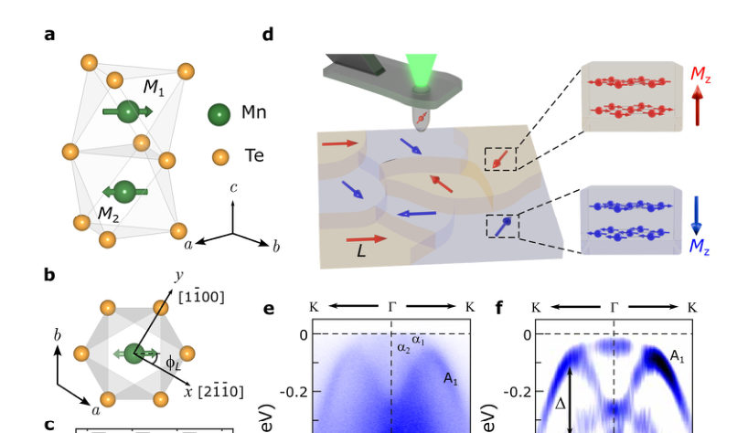
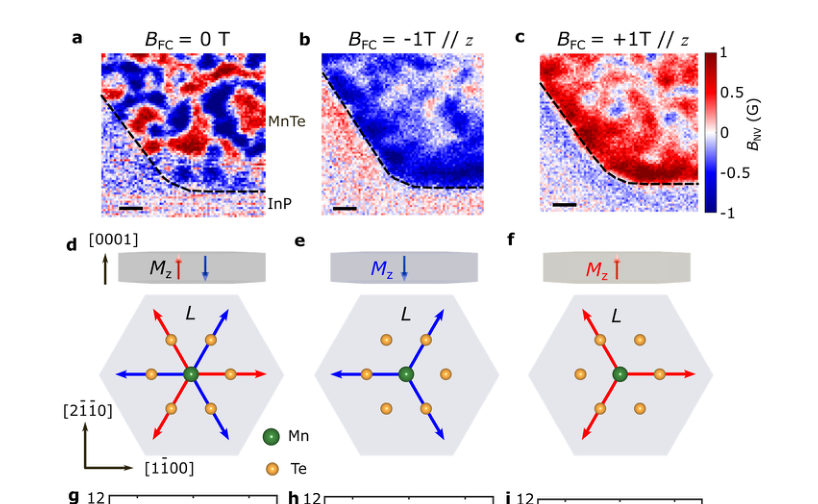
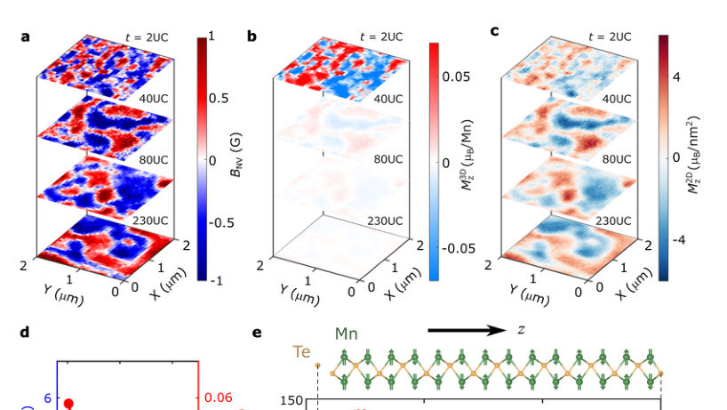
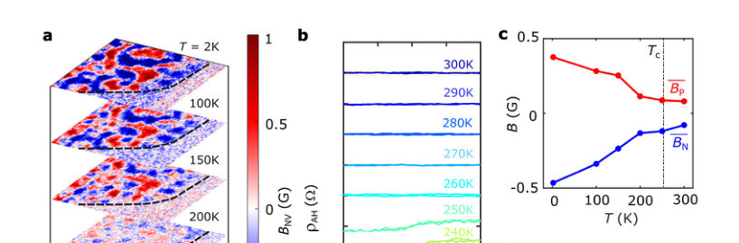
Summary. This paper uses quantum-sensing NV microscopy to image the magnetic domains of altermagnetic MnTe films at the nanoscale. It reveals that the weak out-of-plane magnetization is a surface-driven phenomenon linked to symmetry breaking at the interface. These findings provide a crucial experimental link between microscopic spin structure and macroscopic transport effects like the Anomalous Hall effect.
Why it may be interesting. not directly relevant
Main problem. The difficulty in experimentally imaging the nanoscale spin properties and verifying the origin of the predicted weak, uncompensated out-of-plane magnetization in altermagnetic MnTe.
Main result. The researchers successfully visualized evanescent magnetization and magnetic domains in MnTe films using NV microscopy, demonstrating that the magnetization is surface-dominated and correlates with the Anomalous Hall effect.
Method. Scanning-probe nitrogen-vacancy (NV) microscopy was used for nanoscale magnetic imaging, complemented by ARPES for band structure characterization and first-principles calculations for thickness-dependent analysis.
Model / system. Epitaxial alpha-MnTe thin films grown on InP(111)A substrates, characterized by an altermagnetic order with a Néel vector in the c-plane and a predicted weak out-of-plane magnetization due to symmetry breaking.
Key observables. Magnetic stray field maps, spin-splitting energy (delta), anomalous Hall resistance, and layer-resolved magnetic moments.
Important parameters / regimes. Temperature range from 2 K to 300 K, film thicknesses from 2 to 230 unit cells, and spin-splitting energy of approximately 280 meV.
Assumptions / limitations. The observed magnetization is attributed to the breaking of mirror symmetry at the interface/surface.
Figures summary. Fig 1: Crystal structure, NV imaging schematic, and ARPES band dispersion; Fig 2: Magnetic stray field maps and histograms under different cooling fields; Fig 3: Thickness-dependent magnetization and first-principles calculations; Fig 4: Temperature-dependent NV imaging and AH resistance.
Paper structure. The paper introduces the altermagnetic system and imaging setup, presents the visualization of magnetic domains and their control via field cooling, analyzes the thickness dependence to identify the surface origin of magnetization, and concludes by correlating these findings with macroscopic transport properties.
Altermagnets with pronounced spin-splitting band structure, unconventional magnetic and crystal symmetries, and exotic magneto-transport properties have received immense interest in cutting-edge spintronics, materials science, and condensed matter physics research. Microscopic imaging of spontaneous magnetic domains and phases in altermagnets constitutes an important step for investigating their underlying material properties, mechanisms, and spin behaviors. Taking advantage of scanning-probe quantum microscopy, here we report nanoscale quantum sensing of a prototypical altermagnet candidate $α$-MnTe. We visualize evanescent magnetization and the associated magnetic domains in epitaxial MnTe films, which allows external magnetic fields to control the intrinsic altermagnetic order and configurations. By evaluating a series of MnTe films with different thicknesses down to the atomic scale, we further present evidence for the interfacial origin of the observed weak magnetization and show its correlation with the anomalous Hall effect in MnTe film. Our results advance the current understanding of emergent altermagnetism, providing insights into future material design of altermagnet-integrated spintronic devices.
Authors: Ferenc Márkus, Katalin Gambár
Type: theory · Category: statistical mechanics · PDF: https://arxiv.org/pdf/2605.24158v1
Analysis basis: full PDF text, analyzed in chunks
Topic relevance: non-equilibrium dynamics 2/5 · spintronics-quantum-optics interface 2/5
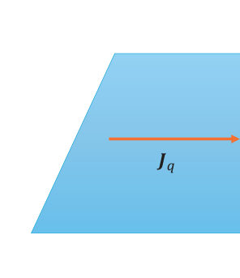
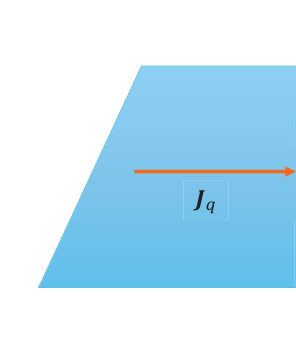
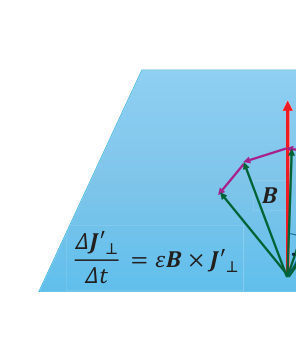
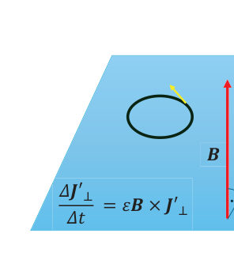
Summary. This paper proposes a theoretical framework for a quantized thermal Hall effect, predicting the existence of stable, non-dissipative thermal current vortices called 'thermions.' These quantized structures are suggested to potentially stabilize magnetic textures like skyrmion lattices. This work links macroscopic thermal transport phenomena to quantum-scale topological stability.
Why it may be interesting. The concept of quantized, dissipationless, and topologically stable 'knot-like' vortices provides an interesting parallel to the study of topological protection and stability in many-body dynamics and topological phases.
Main problem. The paper investigates the existence of a quantum-scale version of the thermal Hall effect and the potential formation of quantized, dissipationless thermal current vortices.
Main result. The authors demonstrate that thermal Hall currents can form closed, non-dissipative, and topologically stable 'thermion' vortices that may play a role in stabilizing magnetic skyrmion lattices.
Method. The study uses an analogy between the thermal Hall effect and the Lorentz force, applying Sommerfeld's flux quantization and Bohr-Landau quantization principles to derive quantized thermal vortex properties.
Model / system. The model focuses on magnetic insulators where electronic conduction is suppressed and heat is driven by phonons, magnons, or Majorana quasiparticles, specifically looking at the interaction between heat flux and magnetic fields.
Key observables. Thermal Hall angle (ratio of transverse to longitudinal thermal conductivity), quantized thermal vortex current density, and thermal Hall radius.
Important parameters / regimes. Magnetic flux quantum (Phi_0), thermal Hall conductivity, magnetic field strength, and characteristic quantum length (lambda_tha) ranging from 0.2 to 0.7 nm.
Assumptions / limitations. The derivation relies on an analogy between different physical disciplines, assumes a homogeneous magnetic field, and assumes the relationship between Bohr radii and thermal vortex radii is proportional.
Figures summary. Figure 1 shows the interaction between B, J_q, and the resulting action E; Figure 2 depicts the change in heat flow direction; Figure 3 illustrates the formation of a self-closing heat vortex; Figure 4 shows stable thermal vortices interacting with a magnetic field.
Paper structure. The paper progresses from a phenomenological description of the classical thermal Hall effect to a theoretical framework for its quantum version, followed by the derivation of quantized vortex properties and an analysis of their interaction with topological structures like skyrmions.
The thermal Hall effect has emerged as a fundamental tool for probing exotic quasiparticles and topological order, particularly in magnetic insulators where electronic conduction is suppressed. Much like skyrmions, which are characterized by their topologically protected spin configurations, the thermal Hall effect is deeply rooted in the geometric properties of the underlying physical space. Although the effect is a well-established experimental phenomenon, current research points toward the existence of its quantum analogue: the quantized thermal Hall effect. In this paper, we provide a theoretical framework for this quantum version based on Sommerfeld's flux quantization. Furthermore, we demonstrate the potential existence of dissipationless thermal current vortices. We suggest that these vortices may play a crucial role in the stability and dynamics of other topological structures, such as skyrmion lattices, offering a new perspective on the interplay between heat transport and magnetic textures.
Authors: Malo Bézard, Simon Garrigou, Jérémie Béal, Andreas Horrer, Yves Auad, Hugo Lourenço-Martins, Davy Gérard, Mathieu Kociak
Type: both · Category: other · PDF: https://arxiv.org/pdf/2605.26058v1
Analysis basis: full PDF text, analyzed in chunks
Topic relevance: interference shaping light 2/5
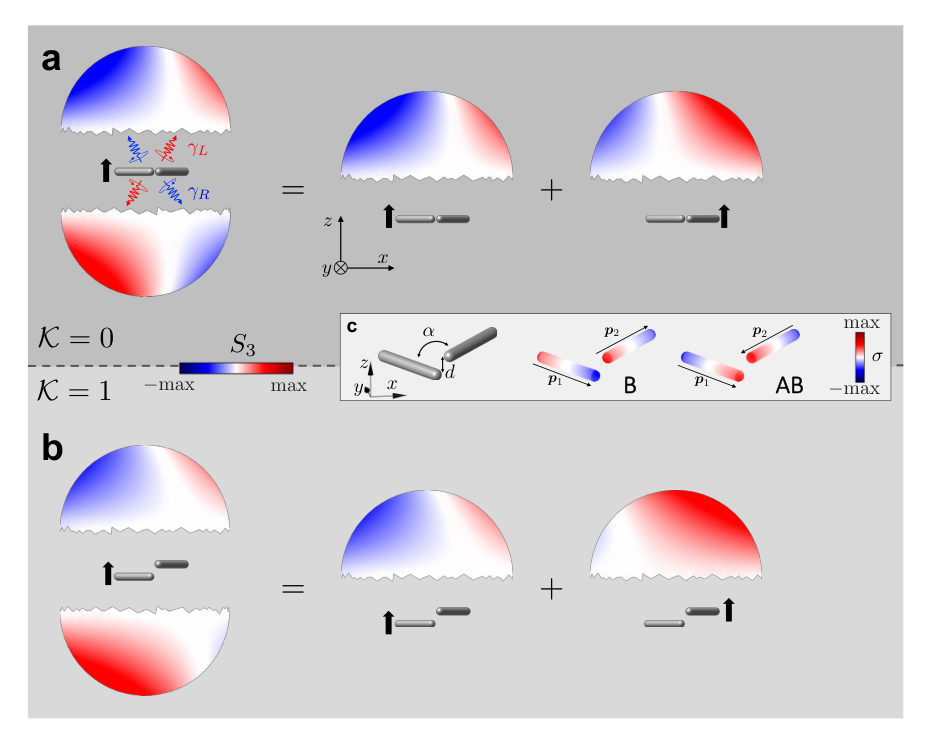
Summary. This paper provides a new method to unambiguously measure the intrinsic helicity of nanophotonic structures by summing dichroic signals from symmetric positions. It resolves the confusion between geometric chirality and experimental artifacts like 'hidden chirality' in achiral plasmonic dimers.
Why it may be interesting. not directly relevant
Main problem. The paper addresses the ambiguity in defining and measuring intrinsic helicity in nanophotonic systems, specifically distinguishing true geometric chirality from 'extrinsic' or 'hidden' chirality arising from experimental geometry and dipole interference.
Main result. The authors establish a rigorous definition of plasmonic helicity and demonstrate that the intrinsic helicity can be measured by symmetrizing the excitation and detection geometry, effectively canceling out extrinsic effects.
Method. The study combines theoretical vector analysis and a two-dipole model with experimental polarized cathodoluminescence (pCL) measurements using a STEM setup and numerical simulations (MNPBEM and pyGDM).
Model / system. The physical system is a Born-Kuhn system (BKS) consisting of coupled gold nano-antennas (dimers) that can be configured in achiral or chiral geometries, excited by a focused free-electron beam.
Key observables. Circular dichroism (CDS) signal (g), Stokes parameter (S3), plasmonic helicity (Hpl), and electron energy loss spectroscopy (EELS) spectra.
Important parameters / regimes. Geometric chirality (K), optical chirality (C), dipole separation (d), antenna angle (alpha), and frequency (omega).
Assumptions / limitations. The antenna separation is much smaller than the wavelength (k*d << 1), and the electron beam is assumed to excite only one dipole at a time due to field decay.
Figures summary. Figure 1 shows achiral vs. chiral configurations and S3 distributions; Figure 2 details the BKS samples and pCL setup; Figure 3 presents spatially localized pCL maps; Figure 4 compares experimental and simulated helicity measurements; Supplemental figures show EELS spectra, mode maps, and mirror-induced polarization effects.
Paper structure. The paper begins by defining the problem of chirality ambiguity, introduces the theoretical framework for plasmonic helicity, presents the experimental pCL platform, demonstrates the symmetrization method to recover intrinsic signals, and concludes with a discussion on the universality of the approach.
Helicity is a universal quantity describing the internal rotation of an object or a field. Whether it characterizes fundamental properties such as the spin of elementary particles or leads to practical consequences such as the toxicity or harmlessness of chiral molecules, defining and measuring it is essential. However, this remains ambiguous in the case of chiral photonic systems such as plasmonic nanoparticles or photonic metasurfaces, where contrary to common knowledge, the observation of circularly polarized dependent optical properties is not a relevant measure for the helicity. We demonstrate experimentally and theoretically that the helicity can be rigorously defined and measured in a nanophotonic system emitting circularly polarized light after excitation in the near-field by a focused electron beam. In the case of a model system composed of two plasmonic dipoles (Born-Kuhn systems), we show that the helicity of photonic modes takes on a very intuitive form and can be simply measured by symmetrizing the geometry of excitation and detection. The method could be extended to a variety of chiral photonic systems, whose locally enhanced properties make them promising for the engineering of local chirality.
Authors: A. A. Zabolotnykh, I. V. Zagorodnev, A. A. Matveev, D. A. Rodionov, O. Yu. Arkhipova, D. V. Kalyabin, A. R. Safin, S. A. Nikitov
Type: theory · Category: other · PDF: https://arxiv.org/pdf/2605.25839v1
Analysis basis: full PDF text, analyzed in chunks
Topic relevance: spintronics-quantum-optics interface 2/5
Summary. This paper theoretically explores how the magnetic properties of a ferromagnetic film can be coupled to the electronic properties of a 2D electron system. It demonstrates that this coupling leads to the splitting of resonance frequencies and the creation of Fano-type interference. This work is significant for designing tunable hybrid magneto-electronic devices.
Why it may be interesting. not directly relevant
Main problem. The study investigates the hybridization and interaction between ferromagnetic resonance (FMR) and cyclotron resonance (CR) in a hybrid heterostructure.
Main result. The researchers found that the FMR and CR undergo anticrossing (frequency repulsion) and identified the emergence of Fano-type antiresonance, accompanied by significant changes in resonance linewidths.
Method. The authors use a theoretical approach based on electromagnetic boundary conditions at the interfaces and the Drude model for electronic conductivity to derive the reflection and absorption coefficients.
Model / system. A 2D electron system (2DES) is placed on a dielectric ferromagnetic film (Bi:TmIG) which sits atop a conducting metal gate, all subjected to a perpendicular static magnetic field.
Key observables. Amplitude reflection coefficient (r), energy absorption coefficient (A), resonance frequencies, and resonance linewidths.
Important parameters / regimes. Magnetic field (H), electron density (n), film thickness (d), saturation magnetization (Ms), gyromagnetic ratio (gamma), and Gilbert damping (alpha).
Assumptions / limitations. The system is treated in the Fabry-Perot limit (low frequency relative to cavity frequency), and the ferromagnetic film is assumed to have frequency-independent permittivity and perpendicular magnetic anisotropy.
Figures summary. Figure 1 provides a schematic of the heterostructure; Figure 2 shows the frequency dependence of the hybridized resonance branches and their splitting versus the applied magnetic field.
Paper structure. The paper introduces the physical system, defines the electromagnetic and electronic models, derives the analytical expressions for resonance interaction, and concludes with a discussion of the anticrossing and antiresonance regimes.
The microwave response of a two-dimensional (2D) electron system located on a dielectric ferromagnetic film, which in turn lies on a conducting metal (gate), has been theoretically studied. The entire system has been placed in the perpendicular static magnetic field. It has been found that the ferromagnetic resonance of the film and the cyclotron resonance of the electrons of the 2D system interact in the magnetic field, leading to their repulsion ('anticrossing'). It has been revealed that the anticrossing region is characterized not only by the modification of resonance frequencies compared to the cyclotron resonance in the 2D system without the ferromagnetic substrate and the ferromagnetic resonance in the film without the 2D system, but also by a strong change in the resonance linewidths.
Authors: Makoto Ichikawa, Youichi Yanase
Type: theory · Category: strongly correlated electrons · PDF: https://arxiv.org/pdf/2605.25197v1
Analysis basis: full PDF text, analyzed in chunks
Topic relevance: non-equilibrium dynamics 2/5
Summary. This paper shows that light irradiation can be used to engineer unidirectional superconducting transport. By using specific light frequencies, researchers can break symmetries to create a 'perfect' diode effect where current flows in only one direction, even in materials that are normally symmetric.
Why it may be interesting. not directly relevant
Main problem. The paper investigates how to achieve the 'perfect' superconducting diode effect (SDE)—where supercurrent flows in only one direction with 100% efficiency—using light-driven nonequilibrium control.
Main result. The authors demonstrate that monochromatic light can induce perfect SDE in systems lacking inversion and time-reversal symmetries, and multi-frequency light can induce it even in centrosymmetric systems via dynamical symmetry breaking.
Method. The study employs the Time-Dependent Ginzburg-Landau (TDGL) theory, using perturbative expansions of the order parameter and Fourier analysis of the supercurrent in the presence of AC electric fields.
Model / system. The model consists of one-dimensional or higher-dimensional superconducting wires subject to continuous-wave light or microwave irradiation, described by a TDGL framework with broken inversion and time-reversal symmetries.
Key observables. Diode efficiency (eta), DC supercurrent (j_dc), photo-induced current (j_photo), and nonreciprocal/nonlinear superfluid density.
Important parameters / regimes. Light intensity (E0), frequency (omega), symmetry-breaking coefficients (alpha_3, beta_1), and temperature near the critical temperature (Tc).
Assumptions / limitations. The analysis assumes the system is near Tc, uses a single-q ansatz where Cooper pair momentum is time-independent, and neglects the imaginary part of the relaxation constant.
Figures summary. Figure 1(a) shows reciprocal DC supercurrent with zero efficiency; supplementary figures show diode efficiency as a function of symmetry-breaking parameters, field amplitude, and frequency.
Paper structure. The paper introduces the problem of perfect SDE, presents the TDGL theoretical framework, analyzes the monochromatic light case in noncentrosymmetric systems, extends the analysis to multi-frequency light in centrosymmetric systems, and discusses the validity and limitations of the approximations used.
We demonstrate the perfect superconducting diode effect (SDE) -- unidirectional supercurrent with 100% diode efficiency -- in light-driven nonequilibrium systems. Although the perfect SDE is difficult to achieve in equilibrium, monochromatic light induces the perfect SDE in systems lacking inversion and time-reversal symmetries. More strikingly, multi-frequency light enables the perfect SDE even in centrosymmetric systems via dynamical symmetry breaking. Our results establish a general principle for realizing unidirectional superconducting transport based on nonequilibrium control and symmetry engineering.
Authors: Cosimo Gorini, Matthieu Bard, Sophie Gueron, Hélène Bouchiat, Giovanni Vignale
Type: theory · Category: disordered systems and neural networks · PDF: https://arxiv.org/pdf/2605.25774v1
Analysis basis: full PDF text, analyzed in chunks
Topic relevance: non-equilibrium dynamics 2/5
Summary. This paper resolves the paradox of how perfectly conducting 1D topological states exhibit resistance. It demonstrates that the same spin-orbit coupling providing topological protection also enables backscattering when an external magnetic field breaks time-reversal symmetry. This 'topological fragility' explains recent experimental observations in Bismuth nanowires.
Why it may be interesting. not directly relevant
Main problem. Explaining the origin of Bilinear Magnetoelectric Resistance (BMER) in 1D spin-momentum locked edge and hinge states, which contradicts the theoretical expectation of perfect conductivity due to immunity to backscattering.
Main result. The authors identify a 'topological fragility' where random spin-orbit interaction enables a backscattering channel when time-reversal symmetry is broken by an external magnetic field, providing a quantitative explanation for BMER in Bismuth hinge states.
Method. The study uses a theoretical framework involving the Landauer-Büttiker formulation, Fermi's Golden Rule for scattering rates, and a gauge transformation to analyze non-reciprocal transport.
Model / system. The model consists of 1D Dirac-type edge or hinge states (e.g., in Bismuth) characterized by spin-momentum locking, subject to a Hamiltonian with an external magnetic field and random spin-orbit interaction (Elliott-Yafet mechanism).
Key observables. Bilinear Magnetoelectric Resistance (BMER), non-reciprocal transport, reflection coefficient, and current-induced magnetization.
Important parameters / regimes. Spin-orbit length (lambda), Fermi velocity (vF), magnetic field strength (H), impurity density (ni), and the ratio of impurity energy fluctuations to Fermi energy (epsilon_0/epsilon_F).
Assumptions / limitations. Assumes weak backscattering, delta-correlated disorder, and that the system equilibrates in the presence of a magnetic field before current is driven; neglects complex many-body effects.
Figures summary. Figure 3(a) shows an experimental setup of Bi nanowires; Figure 4 illustrates Fermi level densities for different Dirac dispersions; Figure 5 shows energy dispersion with and without magnetic fields.
Paper structure. The paper establishes the paradox of BMER in protected states, introduces a model for random spin-orbit interaction, derives the backscattering mechanism via the Elliott-Yafet process, compares exchange vs. magneto-static effects, and concludes with quantitative agreement to experimental data.
In time-reversal symmetric systems such as topological and higher-order topological insulators, 1D spin-momentum locked edge and hinge states are theoretically perfectly conducting'', being immune to backscattering by non-magnetic disorder. Here, we reveal a fundamentaltopological fragility'': these states exhibit a bilinear magnetoelectric resistance significantly larger than in 2D systems. This effect requires two ingredients: (i) spin-momentum locking, which maximizes time-reversal symmetry breaking in the non-linear regime, and (ii) random spin-orbit interaction -- the same mechanism behind Elliott - Yafet spin relaxation in heavy elements. Together, these generate a robust backscattering channel when a modest external magnetic field is applied. Our theory requires no gap opening or complex many-body effects, offering a simple and general mechanism that quantitatively explains recent observations in Bismuth hinge states.
Authors: Pengfei Li, Yi Zhou
Type: theory · Category: strongly correlated electrons · PDF: https://arxiv.org/pdf/2605.24362v1
Analysis basis: full PDF text, analyzed in chunks
Summary. This paper proposes that a helical Rashba-exchange gauge field drives the formation of a unidirectional pair density wave in EuRbFe4As4. The mechanism explains the nanometer-scale modulation observed in STM experiments and predicts detectable spontaneous loop currents. This provides a theoretical link between the material's helical magnetism and its complex superconducting order.
Why it may be interesting. not directly relevant
Main problem. Explaining the origin of the intrinsic, unidirectional (uniaxial) pair density wave (PDW) observed in the iron-pnictide superconductor EuRbFe4As4.
Main result. The interplay of Rashba spin-orbit coupling and a helical exchange field generates an effective U(1) gauge field that stabilizes a spatially modulated Bloch superconducting state with a uniaxial PDW.
Method. A phenomenological Ginzburg-Landau theory is used, incorporating a layer-dependent effective gauge field and symmetry analysis within the Pc4122 magnetic space group.
Model / system. The system is the layered iron-pnictide superconductor EuRbFe4As4, characterized by broken local inversion symmetry in FeAs layers and a period-four helical magnetic order of Eu2+ spins.
Key observables. Uniaxial PDW modulation wavelength, spontaneous intra-layer loop currents, and inter-layer Josephson vortex-antivortex pairs.
Important parameters / regimes. Exchange field scale (Hex approx 26 meV), Rashba SOC scale, magnetic transition temperature (Tm approx 15 K), and superconducting transition temperature (Tc approx 37 K).
Assumptions / limitations. The model assumes a period-four layered structure and uses a simplified Ginzburg-Landau framework with specific symmetry constraints from the D4 point group.
Figures summary. The notes describe layer diagrams of the crystal structure, phase diagrams of the superconducting states, and spatial distributions of superfluid density and spontaneous currents.
Paper structure. The paper identifies the scientific problem, describes the physical system and Hamiltonian, develops a Ginzburg-Landau theory, performs stability and symmetry analysis, and concludes with predicted experimental signatures.
The recent discovery of an intrinsic pair density wave (PDW) in the iron-pnictide superconductor EuRbFe$_4$As$_4$ presents a fascinating puzzle. Structurally, the FeAs layers break local inversion symmetry, while the Eu$^{2+}$ spins exhibit a period-four helical magnetic order. Here, we demonstrate that the interplay of induced Rashba spin-orbit coupling and the helical exchange field generates a layer-rotating effective $U(1)$ gauge field for the Cooper pairs. Because this gauge field shares the symmetry of the Fe $3d_{xz}/3d_{yz}$ orbitals, it explicitly induces an intertwined, orbital-selective pairing state. Using a phenomenological Ginzburg-Landau theory, we show this mechanism naturally stabilizes a structurally modulated Bloch superconducting state. This state features a strictly uniaxial (unidirectional) PDW, naturally capturing the phenomenology of recent scanning tunneling microscopy experiments. Furthermore, we predict this PDW is accompanied by spontaneous loop currents between adjacent layers, offering a distinctive signature for future $μ$SR or scanning SQUID experiments.
Authors: Yang Li, Xiaoming Lyu, Ling Xia, Kuo Zhan, Haoyu Ji, Lei Qin, Seppo J. Vainio, Jian-An Huang
Type: both · Category: disordered systems and neural networks · PDF: https://arxiv.org/pdf/2605.25465v1
Analysis basis: full PDF text, analyzed in chunks
Summary. This paper presents an AI-driven SERS-based sensing platform for the label-free detection of extracellular vesicles in tears and sweat. By combining nanoparticle-induced Raman enhancement with deep learning, the researchers achieved high-accuracy identification of disease-specific vesicles. This approach offers a potential path toward non-invasive, point-of-care diagnostics for various clinical conditions.
Why it may be interesting. not directly relevant
Main problem. The need for a non-invasive, label-free, and rapid method to detect and identify Extracellular Vesicles (EVs) from various cellular origins in biofluids like tears and sweat.
Main result. Developed an AI-assisted SERS platform that achieves over 92% accuracy in identifying EVs from 7 different disease sources in tears and successfully differentiates EVs from 6 different cell lines.
Method. The method uses salt-induced aggregation of silver nanoparticles (AgNPs) to enhance Raman signals, combined with machine learning models including PCA-SVM for cell origin classification and CNN/RNN for disease identification.
Model / system. An experimental platform consisting of silver nanoparticles (Ag@BO) interacting with EVs in biological fluids (tears and sweat), supported by Molecular Dynamics simulations of protein-AgNP electrostatic interactions.
Key observables. Raman spectral fingerprints (specifically peaks at 845, 997, and 1654 cm-1), EV size (100-150 nm), and classification accuracy/confusion matrices.
Important parameters / regimes. Sample volume of 10 uL, 532 nm laser wavelength, and 70/30 training/testing data split.
Assumptions / limitations. Assumes that the molecular signatures in EVs accurately reflect the pathophysiological status of the parental cells and that the SERS signal is representative of the EV composition.
Figures summary. Fig 1: Workflow of EV detection and ML pipeline; Fig 2: EV isolation, TEM, and Western Blot validation; Fig 4: SERS profiles and PCA/HCA clustering; Fig 6: 3D PCA and sweat analysis; Fig 7: Tear collection workflow and ROC curves for CNN/RNN/SVM.
Paper structure. Introduction of the clinical need -> Experimental platform development (AgNP synthesis and EV isolation) -> Characterization of EVs (TEM, NTA, Western Blot) -> SERS spectral analysis and ML implementation (PCA-SVM, CNN, RNN) -> Validation with clinical tear and sweat samples -> Molecular Dynamics simulation of binding mechanism.
Wearable sensing technology capable of point-of-care, continuous and non-invasive analysis of exosomes in biofluid such as tears and sweat is an essential part for future personalized medicine. Major detection and identification methods of cell secreted Extracellular Vesicles (EVs) often require labeling and are time-consuming, resulting in low efficiency in EV mechanism research and disease diagnosis. While the label-free Surface-enhanced Raman spectroscopy (SERS) has been combined with deep learning model for EV identification in blood, their application to non-invasive detection of EVs in tears and sweat are missing. Here, we filled this gap by developing an artificial intelligence (AI)-assisted Surface-enhanced Raman spectroscopy (SERS) method based on salt-induced nanoparticle aggregation for fast EV identification in tears and sweat with high accuracy. Significantly, our label-free detection and AI differentiation of EVs from 6 cell lines (HepG2, Hela, 143B, LO-2, BMSC, H8) achieved the identification of EVs in tear fluids from 7 different disease sources with accuracies >92%. Our results showed that this platform can not only distinguish EVs from multiple cell sources but also generate highly reproducible and selective EV signals in tear fluids without a need for chemical labeling or separation steps. Molecular dynamics simulations revealed that silver atoms (Ag) form electrostatic interactions with oxygen atoms of multiple amino acid residues in proteins, suggesting a high affinity. This strategy realizes ultra-sensitive and anti-interference detection of EVs, providing a new idea for the rapid diagnosis of clinical diseases.
Authors: Yuya Fukuta, Souren Adhikary, Kazuhito Tsukagoshi, Katsunori Wakabayashi
Type: theory · Category: strongly correlated electrons · PDF: https://arxiv.org/pdf/2605.24376v1
Analysis basis: full PDF text, analyzed in chunks
Summary. This paper explores how doping monolayer SnO with transition metals and engineering the edges of SnO nanoribbons can create localized magnetism and 1D metallic channels. It identifies a fundamental trade-off where stable oxygen-rich edges are semiconducting, while more energetic tin-rich edges enable metallic transport. These findings suggest SnO is a versatile platform for developing future spintronic and nanoelectronic devices.
Why it may be interesting. not directly relevant
Main problem. Investigating how transition-metal doping and edge engineering can be used to tailor the electronic, magnetic, and optical properties of monolayer SnO for spintronic and nanoelectronic applications.
Main result. Transition-metal doping induces localized magnetic moments and flat bands, while Sn-terminated nanoribbon edges create metallic 1D conduction channels, presenting a trade-off between thermodynamic stability and conductivity.
Method. First-principles Density Functional Theory (DFT) calculations using the VASP and Quantum ESPRESSO packages, incorporating the GGA-PBE functional and DFT+U to account for electron correlations.
Model / system. A monolayer of tin monoxide (SnO), a p-type oxide semiconductor, studied in both a 4x4x1 supercell for transition-metal doping (Mn, Fe, Co, W) and as various hydrogen-passivated nanoribbon geometries.
Key observables. Spin-resolved density of states (DOS), magnetic moments, band structures, optical conductivity, refractive index, and relative formation energies.
Important parameters / regimes. On-site Coulomb interaction (U = 3 eV for Co), ribbon width, and edge termination (Sn-terminated vs. oxygen-rich).
Assumptions / limitations. The study assumes the validity of the PBE functional and the DFT+U approach for describing localized d-orbitals; results may be specific to the Sn 5s-O 2p hybridization in SnO.
Figures summary. Figure 1 shows the doped supercell structures and spin-resolved DOS; Figure 2 displays spin-polarized band structures and optical conductivity spectra; Figure 3 and 4 illustrate nanoribbon geometries, edge-localized wavefunctions, and the electronic properties of different edge terminations.
Paper structure. The paper introduces the SnO system, details the DFT methodology, presents results for transition-metal doping and its magnetic/optical consequences, moves to the investigation of nanoribbon edge states and stability, and concludes with design principles for SnO-based electronics.
Tin monoxide (SnO) is a p-type oxide semiconductor whose electronic properties can be widely modified via atomic-scale engineering. Using density functional theory, we investigate the electronic and magnetic properties of transition-metal (TM = Mn, Fe, Co and W) doped SnO monolayer within a large supercell. We find that all dopants induce finite localized magnetic moments, primarily originating from $d$-orbitals of the impurity atoms. We show that these localized magnetic states give rise to nearly dispersionless bands in the vicinity of the Fermi energy (taking Co doped SnO as an example). In addition, we investigate dimensional effects by constructing nanoribbon geometries of SnO monolayer. The ribbons exhibit intrinsic edge-localized states that are largely independent of ribbon width. For chiral nanoribbons oriented along a low-symmetry direction of the square lattice, we find that oxygen-rich edges are thermodynamically most stable and remain semiconducting, whereas Sn-terminated edges host metallic one-dimensional conduction channels. Our results demonstrate that transition-metal doping and edge engineering provide effective routes to tailor the electronic properties of SnO monolayer, making it a promising candidate for future spintronic and nanoelectronic applications.
Authors: Kryštof Kolář, Andrea F. Young, Cyprian Lewandowski
Type: theory · Category: strongly correlated electrons · PDF: https://arxiv.org/pdf/2605.24080v1
Analysis basis: full PDF text, analyzed in chunks
Summary. This paper demonstrates that even without an external displacement field, the self-consistent electrostatic screening in thick rhombohedral graphite can flatten surface bands. This discovery establishes a new, low-field regime for exploring interaction-driven phenomena like superconductivity and magnetism in large-N graphene systems.
Why it may be interesting. not directly relevant
Main problem. Determining whether the surface flat-band regime, typically observed in few-layer rhombohedral graphene at large displacement fields, can be accessed in thick rhombohedral graphite where strong screening usually suppresses internal electric fields.
Main result. Self-consistent, nonlinear electrostatics provides a mechanism to flatten surface bands even at zero displacement field by creating a near-surface potential that counteracts quadratic dispersion. This effect is enhanced by hole doping and stronger interactions, providing a robust regime for symmetry-broken phases in large-N samples.
Method. The authors use a self-consistent iterative numerical approach to solve Gauss' Law and the tight-binding Hamiltonian simultaneously, comparing the results against analytical limits and a non-self-consistent 'frozen-charge' model.
Model / system. The system is rhombohedral (ABC-stacked) multilayer graphene/graphite with a realistic N-layer tight-binding Hamiltonian including interlayer hopping (t1), remote tunneling (v3, v4), and layer-specific electrostatic potentials (Ul) determined by screening.
Key observables. Surface-band dispersion (flatness), Density of States (DOS), layer-resolved probability density, and layer-specific electrostatic potentials.
Important parameters / regimes. Number of layers (N), displacement field (D), carrier density (n), out-of-plane dielectric constant (epsilon_perp), and remote hopping parameters (v3, v4).
Assumptions / limitations. The study assumes a realistic tight-binding parameter set and uses the out-of-plane dielectric constant as a proxy for interaction strength; it also assumes monotonic potential profiles for certain analytical derivations.
Figures summary. Figure 1 shows a phase diagram in the n-D plane and compares idealized vs. realistic band structures. Figure 2 illustrates the evolution of the potential profile and DOS. Supplemental figures compare self-consistent results to linear-potential and frozen-charge approximations.
Paper structure. The paper introduces the problem of screening in thick rhombohedral graphene, presents a self-consistent electrostatic model, develops the mechanism for electrostatic band flattening, analyzes the effects of doping and interaction strength, and concludes with implications for future experimental observations of symmetry-broken phases.
Rhombohedral (ABC-stacked) multilayer graphene hosts interaction-driven phases enabled by surface flat bands at large displacement fields. In thick flakes, however, strong screening suppresses internal electric fields, raising the question of whether a flat-band regime is accessible within the same experimental paradigm. Here, we show that self-consistent, nonlinear electrostatics provides a robust alternative mechanism: even in the absence of a displacement field, a nonuniform near-surface potential flattens the surface-band dispersion and enhances the density of states. In the strong-coupling limit, electrostatics drives the system toward uniform half-filling at each momentum, yielding an asymptotically flat surface band without any gating. At realistic interaction strengths, surface-band flatness is tuned by the proximal gate, with maximal flatness achieved at hole doping when the band is empty. Combining analytic arguments with fully self-consistent calculations in a realistic model, we map the resulting low-field regime and connect to finite $N\!\sim\! 6-15$ layered samples, providing a framework for analyzing the symmetry-broken phases observed in these systems. Our results motivate future experiments in large-$N$ devices and establish a low-field regime for exploring electrostatically induced flat-band physics.
← Index · ← Previous · Next →